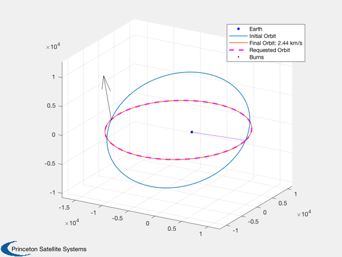
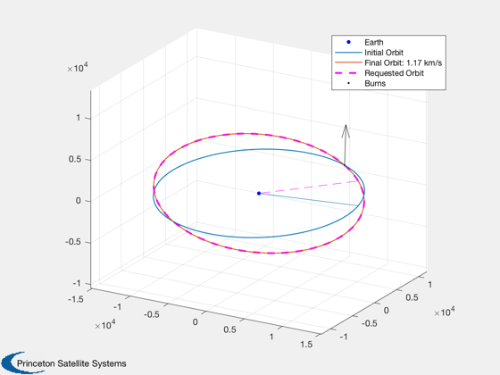

Contents
Compare an optimized transfer to a pure inclination maneuver
See also OrbMnvrInclination, OrbMnvrLongAndIncl, OptimizeImpulsiveLVLH, PlotImpulsiveTrajectory
%-------------------------------------------------------------------------- % Copyright (c) 2018 Princeton Satellite Systems, Inc. % All rights reserved. %--------------------------------------------------------------------------
Parameters
sma = 12000; ecc = 0.2; i0 = 0.6;
Pure inclination change - one-burn analytical solution(s)
The solver doesn't "know" that it's cheaper to do the inclination at apogee; some combinations of mean anomaly/flags result in the burn being done at more expensive perigee.
Increase inclination: [dV -pi pi/2-dI/2] (LVLH angles) - at apogee Decrease inclination: [dV -pi -(pi/2-dI/2)]
CAREFUL of ratio of error in SMA to that of angles/inc in cost function
deltaI = -pi/6; % ex. try mean anom of -0.01, +0.05, etc. elInitial = [sma i0 0.1 0 ecc 2*pi*rand(1)]; elFinal = [sma i0+deltaI 0.1 0 ecc 0]; % Analytical disp('Analytical inclination calculation:') deltaV = OrbMnvrInclination( VOrbit(sma*(1+ecc),sma), ecc, 0, abs(deltaI) ); deltaV_a = deltaV.total; DispWithTitle(deltaV_a,'deltaV from apoapsis'); deltaV = OrbMnvrInclination( VOrbit(sma*(1-ecc),sma), ecc, 0, abs(deltaI) ); deltaV_p = deltaV.total; DispWithTitle(deltaV_p,'deltaV from periapsis'); % Optimizer tic [burnsOpt,elA,out] = OptimizeImpulsiveLVLH(elInitial,elFinal); toc OptimizerReport(out,true); % Compare to analytical errDVa = sum(burnsOpt(:,1)) - deltaV_a; fprintf('\nError in DV from Inclination (apogee): %g km/s\n',errDVa); errDVp = sum(burnsOpt(:,1)) - deltaV_p; fprintf('\nError in DV from Inclination (perigee): %g km/s\n',errDVp); burnsC = Burns2Cart(burnsOpt); burnsR = Burns2RelAngles(burnsC,elInitial); PlotImpulsiveTrajectory(elInitial, burnsOpt, elFinal,'lvlh');
Analytical inclination calculation:
deltaV from apoapsis
2.43589665134825
deltaV from periapsis
3.65384497702238
Elapsed time is 1.258106 seconds.
Total Delta-V (km/s):
2.43588693310696
Number of burns:
1
Initial elements, target, achieved:
Columns 1 through 3
12000 0.6 0.1
12000 0.0764012244017012 0.1
12000.0017756428 0.07640339215526 0.0999997232400016
Columns 4 through 6
0 0.2 2.41502702978638
0 0.2 0
6.28318462383501 0.1999998224359 -3.14159119037213
Mission duration:
25.2131 Time (min)
Cost value:
2.43588693310696
Iterations:
460
Burns (lvlh: DV, alpha, beta, dT):
Columns 1 through 3
2.43588693310696 3.14159086412886 1.30899822996007
Column 4
0.115636520391578
Error in DV from Inclination (apogee): -9.71824e-06 km/s
Error in DV from Inclination (perigee): -1.21796 km/s
 Node change
elInitial2 = [sma 5*pi/180 10*pi/180 0 0 2*pi*rand(1)]; elFinal2 = [sma 15*pi/180 50*pi/180 0 0 0]; [deltaVW, uW] = OrbMnvrLongAndIncl( VOrbit(sma), elInitial2(2), elFinal2(2), elFinal2(3)-elInitial2(3) ); DispWithTitle(deltaVW,'deltaVW'); [burns2,elOutput,opt] = OptimizeImpulsiveLVLH( elInitial2, elFinal2 ); disp('Longitude and Node burns') disp(' DV phi theta time') disp(burns2) PlotImpulsiveTrajectory(elInitial2, burns2, elFinal2,'lvlh'); errDVn = sum(burns2(:,1)) - deltaVW.total; fprintf('\nError in DV from Node change: %g km/s\n',errDVn); %--------------------------------------
deltaVW
total: 1.16613587657156
Longitude and Node burns
DV phi theta time
Columns 1 through 3
1.16612589445818 3.141588281672 1.46945697043112
Column 4
0.261455420020639
Error in DV from Node change: -9.98211e-06 km/s
